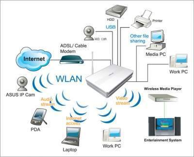
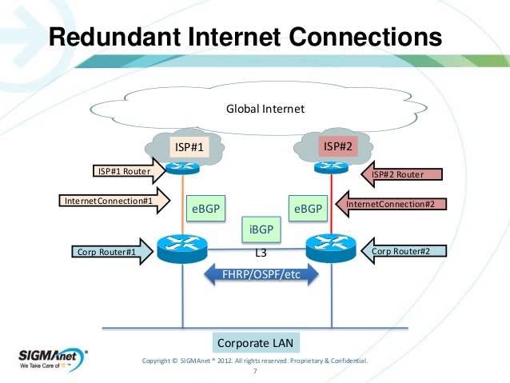
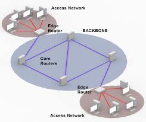
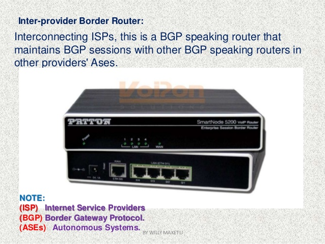
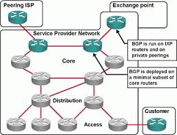
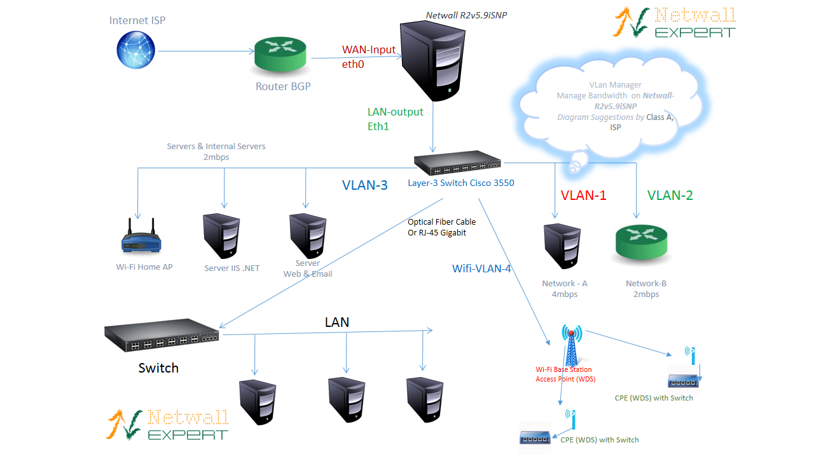
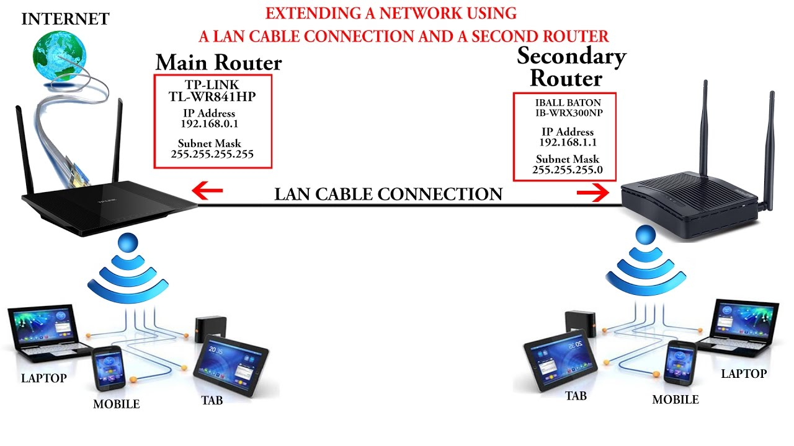

The main purpose of a router is to connect multiple networks and forward packets destined either for its own networks or other networks. A router is considered a layer-3 device because its primary forwarding decision is based on the information in the layer-3 IP packet, specifically the destination IP address. When a router receives a packet, it searches its routing table to find the best match between the destination IP address of the packet and one of the addresses in the routing table. Once a match is found, the packet is encapsulated in the layer-2 data link frame for the outgoing interface indicated in the table entry. A router typically does not look into the packet payload,[citation needed] but only at the layer-3 addresses to make a forwarding decision, plus optionally other information in the header for hints on, for example, quality of service (QoS). For pure IP forwarding, a router is designed to minimize the state information associated with individual packets. Once a packet is forwarded, the router does not retain any historical information about the packet.
The routing table itself can contain information derived from a variety of sources, such as a default or static routes that are configured manually, or dynamic routing protocols where the router learns routes from other routers. A default route is one that is used to route all traffic whose destination does not otherwise appear in the routing table; this is common – even necessary – in small networks, such as a home or small business where the default route simply sends all non-local traffic to the Internet service provider. The default route can be manually configured (as a static route), or learned by dynamic routing protocols, or be obtained by DHCP.

A router can run more than one routing protocol at a time, particularly if it serves as an autonomous system border router between parts of a network that run different routing protocols; if it does so, then redistribution may be used (usually selectively) to share information between the different protocols running on the same router.
Besides making a decision as to which interface a packet is forwarded to, which is handled primarily via the routing table, a router also has to manage congestion when packets arrive at a rate higher than the router can process. Three policies commonly used in the Internet are tail drop, random early detection (RED), and weighted random early detection (WRED). Tail drop is the simplest and most easily implemented; the router simply drops new incoming packets once the length of the queue exceeds the size of the buffers in the router. RED probabilistically drops datagrams early when the queue exceeds a pre-configured portion of the buffer, until a pre-determined max, when it becomes tail drop. WRED requires a weight on the average queue size to act upon when the traffic is about to exceed the pre-configured size, so that short bursts will not trigger random drops.[citation needed]
Another function a router performs is to decide which packet should be processed first when multiple queues exist. This is managed through QoS, which is critical when Voice over IP is deployed, so as not to introduce excessive latency.[citation needed]
Yet another function a router performs is called policy-based routing where special rules are constructed to override the rules derived from the routing table when a packet forwarding decision is made.
Router functions may be performed through the same internal paths that the packets travel inside the router. Some of the functions may be performed through an application-specific integrated circuit (ASIC) to avoid overhead of scheduling CPU time to process the packets. Others may have to be performed through the CPU as these packets need special attention that cannot be handled by an ASIC.
External networks must be carefully considered as part of the overall security strategy of the local network. A router may include a firewall, VPN handling, and other security functions, or these may be handled by separate devices. Many companies produced security-oriented routers, including Cisco PIX series, Cisco Meraki MX series and Juniper NetScreen. Routers also commonly perform network address translation, (which allows multiple devices on a network to share a single public IP address) and stateful packet inspection. Some experts argue that open source routers are more secure and reliable than closed source routers because open source routers allow mistakes to be quickly found and corrected.
Routers intended for ISP and major enterprise connectivity usually exchange routing information using the Border Gateway Protocol (BGP). RFC 4098 standard defines the types of BGP routers according to their functions:

>>Edge router: Also called a provider edge router, is placed at the edge of an ISP network. The router uses External BGP to EBGP routers in other ISPs, or a large enterprise Autonomous System.
Subscriber edge router: Also called a Customer Edge router, is located at the edge of the subscriber's network, it also uses EBGP to its provider's Autonomous System. It is typically used in an (enterprise) organization.

>>Inter-provider border router: Interconnecting ISPs, is a BGP router that maintains BGP sessions with other BGP routers in ISP Autonomous Systems.

>>Core router: A core router resides within an Autonomous System as a back bone to carry traffic between edge routers.

>>Within an ISP: In the ISP's Autonomous System, a router uses internal BGP to communicate with other ISP edge routers, other intranet core routers, or the ISP's intranet provider border routers.
>>"Internet backbone:" The Internet no longer has a clearly identifiable backbone, unlike its predecessor networks. See default-free zone (DFZ). The major ISPs' system routers make up what could be considered to be the current Internet backbone core.
>> ISPs operate all four types of the BGP routers described here. An ISP "core" router is used to interconnect its edge and border routers. Core routers may also have specialized functions in virtual private networks based on a combination of BGP and Multi-Protocol Label Switching protocols.

>>Port forwarding: Routers are also used for port forwarding between private Internet-connected servers.
>>Voice/Data/Fax/Video Processing Routers: Commonly referred to as access servers or gateways, these devices are used to route and process voice, data, video and fax traffic on the Internet. Since 2005, most long-distance phone calls have been processed as IP traffic (VOIP) through a voice gateway. Use of access server type routers expanded with the advent of the Internet, first with dial-up access and another resurgence with voice phone service.
>>Larger networks commonly use multilayer switches, with layer 3 devices being used to simply interconnect multiple subnets within the same security zone, and higher layer switches when filtering, translation, load balancing or other higher level functions are required, especially between zones.
